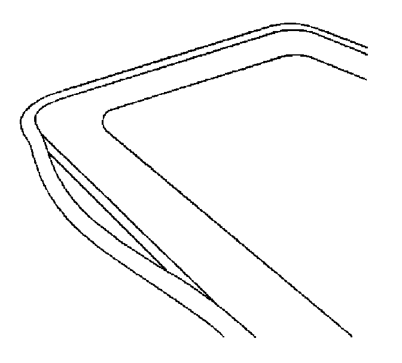

Sunroof Window Weatherstrip Replacement
SUNROOF WINDOW WEATHERSTRIP REPLACEMENT
REMOVAL PROCEDURE
1. Remove the sunroof window.

2. Carefully remove the sunroof window weatherstrip from the perimeter of the sunroof window.
INSTALLATION PROCEDURE
1. Carefully install the sunroof window weatherstrip to the perimeter of the sunroof window, ensuring that the weatherstrip is fully seated.
2. Install the sunroof window to the sunroof module assembly.
3. Ensure that the sunroof does not have any air or waterleaks.